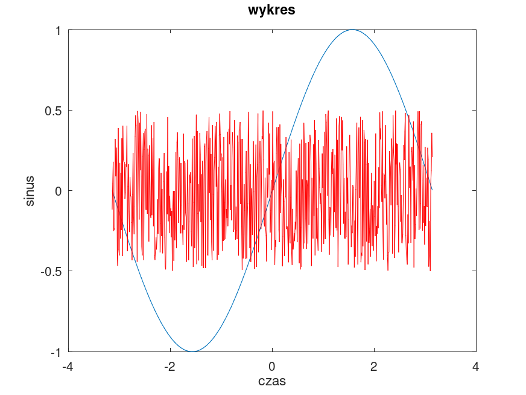
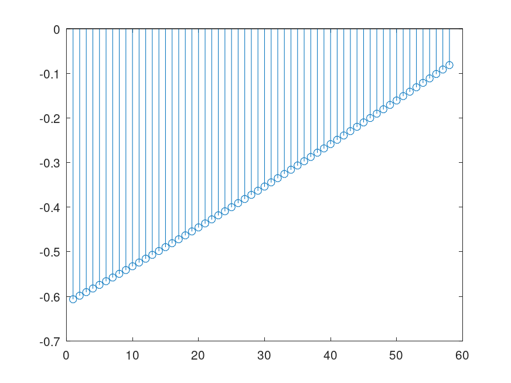
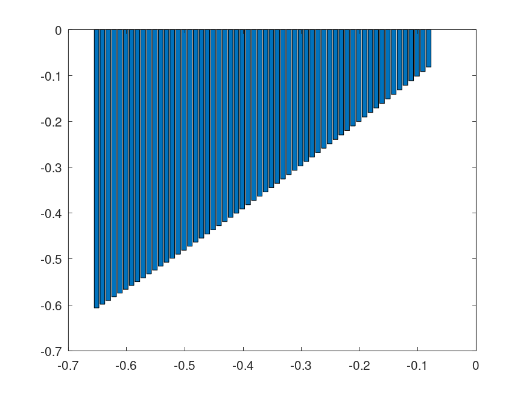
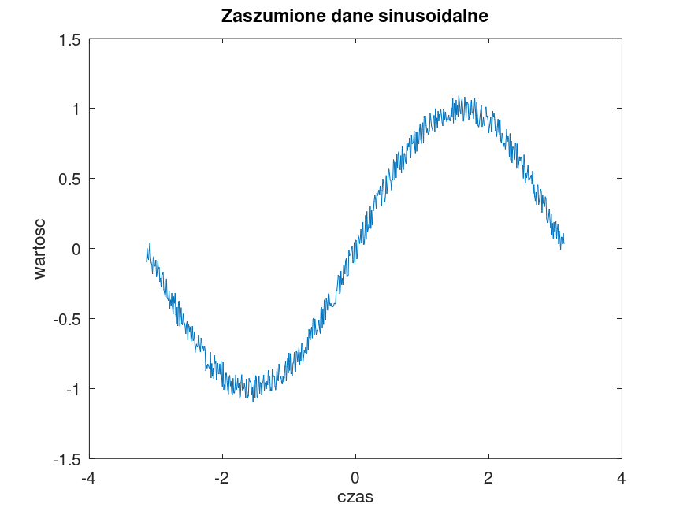
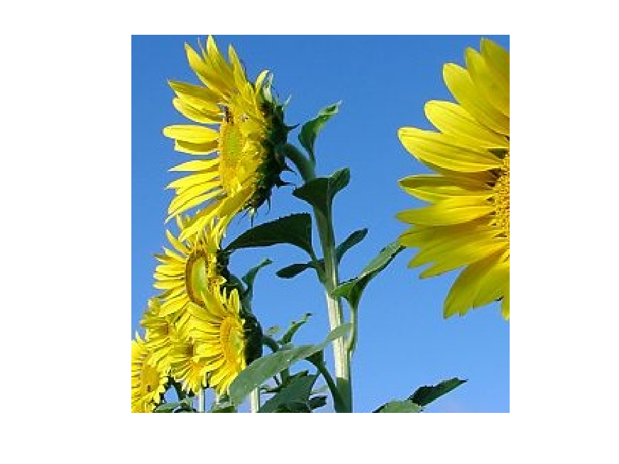
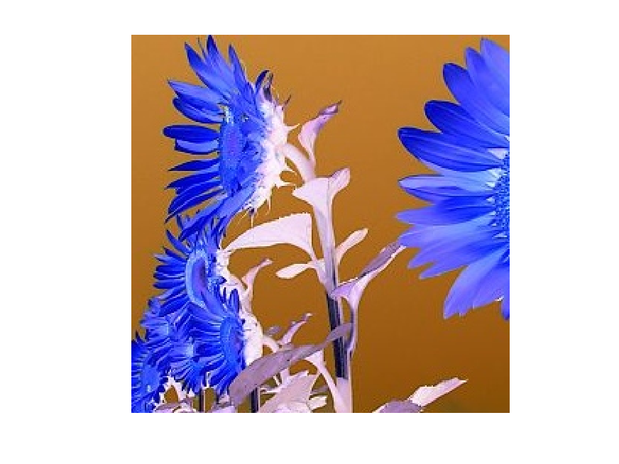

Joanna Dagil 231008
Zapoznanie sie z podstawowymi cechami srodowiska Matlab i przykladami popularnych instrukcji.
Przyklady deklaracji (i nadawania wartosci) zmiennym.
x = 2.1; y = 2.1 + 1i*3.3; X = [1, 4, 6]; Y = [1; 4; 6]; Y = X'; YY = [1 4 6; 5 6 9]; % INNE PRZYKLADY % Wygeneruj dane opisane funkcja sin w zakresie od -PI do +PI z przyrostem % argumentu rownym 0.01 (wykres wyglada wowczas jak ciagly) % Wygeneruj dane losowe w tym samym zakresie i z tym samym przyrostem, % wartosci danych powinny oscylowac pomiedzy -0.5 i +0.5. t = -pi:0.01:pi; % dziedzina x1 = sin(t); % wartosci sinusa n = length(t); % liczba probek w dziedzinie t x2 = -0.5+rand(1,n); % dane losowe pomiedzy -0.5 i +0.5
XY = X*Y; YX = Y*X; A = [1, 2, 1; 4, 5, 6; 7, 8, 9]; B = [9, 8, 7; 6, 5, 4; 1, 2, 1]; AplusB = A + B; AmmB = A * B; AmiB = A .* B; AdiB = A ./ B; AdmB = A / B; AddB = A * inv(B);
W przypadku kreslenia (wizualizacji) danych 1D, np. szeregow czasowych, postepujemy zazwyczaj w nastepujacy (lub podobny) sposob:
figure(1); plot(t, x1); title('wykres'), xlabel('czas'), ylabel('sinus'); hold on plot(t,x2,'r'); hold off; figure(2); stem(x1(250:307)); figure(3); bar(t(250:307),x1(250:307)); x3 = x1-0.1+0.2.*rand(1,n); % dane sinusoidalne z losowym szumem figure(4) plot(t,x3) title('Zaszumione dane sinusoidalne') ylabel('wartosc') xlabel('czas');




Matlab akceptuje (w sensie czytania i zapisu) obrazy w bardzo wielu formatach (jpg, gif, bmp, png, itd.) ale ich wewnetrzna reprezentacja jest zawsze taka sama.
pkg load image ImCol = uint8(zeros(128, 128, 3)); ImGray = uint8(zeros(128, 128)); % Typowa sekwencja wczytania, przetwarzania, wyswietlania i zapisu obrazu: Im = imread('obraz.bmp'); figure(5); imshow(Im); % wyswietlenie wczytanego obrazu ImZ = double(Im); % zamiana na postac zmiennoprzecinkowa... ImZ = 255 - ImZ; % negatyw figure(6); imshow(ImZ/255); % dlaczego dzielimy przez 255? ImNew = uint8(ImZ); % powrot do reprezentacji bajtowej imwrite(ImNew,'obraz_nowy.jpg'); % zapis do foldera


Typowa sekwencja odczytu i zapisu pliku video
% Nie zaimplementowanie w Octave %v = VideoReader('film_01.avi'); %v2 = VideoWriter('film_01','MPEG-4'); %open(v2); %while hasFrame(v) % klatka = readFrame(v); % % ewentualne przetworzenie klatki % klatka1 = imresize(klatka,0.5); % writeVideo(v2,klatka1) ; %end %close(v2);
Przyklady uzycia funkcji
function a = dodaj(b,c) a = b+c; endfunction b = 25; c = 75; a = dodaj(b,c) b1 = 4.567; c1 = 1.017 + 1i*0.589; a1 = dodaj(b1,c1)
a = 100 a1 = 5.5840 + 0.5890i
% clear all; % usuniecie wszystkich zmiennych % close all; % zamkniecie wszystkich wykresow % clc % zresetowanie okna komend